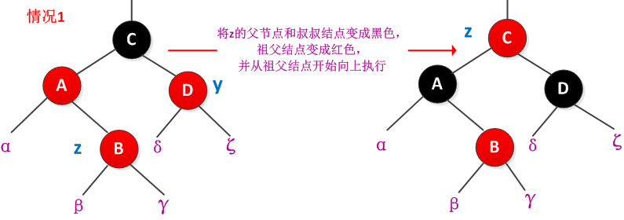
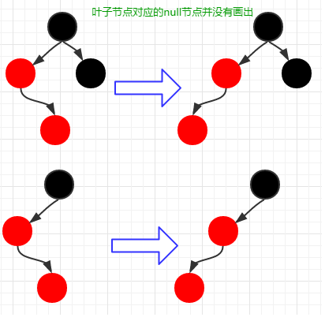
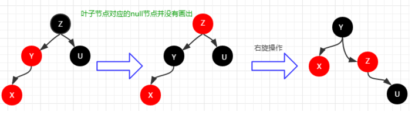

# 概述
TreeMap 实现了 SotredMap 接口，它是有序的集合。而且是一个红黑树结构，每个 key-value 都作为一个红黑树的节点。如果在调用 TreeMap 的构造函数时没有指定比较器，则根据 key 执行自然排序
# 继承关系
public class TreeMap<K,V> | |
extends AbstractMap<K,V> | |
implements NavigableMap<K,V>, Cloneable, java.io.Serializable {} |
# 实现接口
Serializable, Cloneable, Map<K,V>, NavigableMap<K,V>, SortedMap<K,V> |
# TreeMap 基本属性
private final Comparator<? super K> comparator; // 比较器，是自然排序，还是定制排序 ，使用 final 修饰，表明一旦赋值便不允许改变 | |
private transient Entry<K,V> root = null; // 红黑树的根节点 | |
private transient int size = 0; //TreeMap 中存放的键值对的数量 | |
private transient int modCount = 0; // 修改的次数 |
# 红黑树数据结构
static final class Entry<K,V> implements Map.Entry<K,V> { | |
K key; // 键 | |
V value; // 值 | |
Entry<K,V> left = null; // 左孩子节点 | |
Entry<K,V> right = null; // 右孩子节点 | |
Entry<K,V> parent; // 父节点 | |
boolean color = BLACK; // 节点的颜色，在红黑树种，只有两种颜色，红色和黑色 | |
// 构造方法，用指定的 key,value ,parent 初始化，color 默认为黑色 | |
Entry(K key, V value, Entry<K,V> parent) { | |
this.key = key; | |
this.value = value; | |
this.parent = parent; | |
} | |
// 返回 key | |
public K getKey() { | |
return key; | |
} | |
// 返回该节点对应的 value | |
public V getValue() { | |
return value; | |
} | |
// 替换节点的值，并返回旧值 | |
public V setValue(V value) { | |
V oldValue = this.value; | |
this.value = value; | |
return oldValue; | |
} | |
// 重写 equals () 方法 | |
public boolean equals(Object o) { | |
if (!(o instanceof Map.Entry)) | |
return false; | |
Map.Entry<?,?> e = (Map.Entry<?,?>)o; | |
// 两个节点的 key 相等，value 相等，这两个节点才相等 | |
return valEquals(key,e.getKey()) && valEquals(value,e.getValue()); | |
} | |
// 重写 hashCode () 方法 | |
public int hashCode() { | |
int keyHash = (key==null ? 0 : key.hashCode()); | |
int valueHash = (value==null ? 0 : value.hashCode()); | |
//key 和 vale hash 值得异或运算，相同则为零，不同则为 1 | |
return keyHash ^ valueHash; | |
} | |
// 重写 toString () 方法 | |
public String toString() { | |
return key + "=" + value; | |
} | |
} |
# 构造方法
// 构造方法，comparator 用键的顺序做比较 | |
public TreeMap() { | |
comparator = null; | |
} | |
// 构造方法，提供比较器，用指定比较器排序 | |
public TreeMap(Comparator<? super K> comparator) { | |
his.comparator = comparator; | |
} | |
// 将 m 中的元素转化 daoTreeMap 中，按照键的顺序做比较排序 | |
public TreeMap(Map<? extends K, ? extends V> m) { | |
comparator = null; | |
putAll(m); | |
} | |
// 构造方法，指定的参数为 SortedMap | |
// 采用 m 的比较器排序 | |
public TreeMap(SortedMap<K, ? extends V> m) { | |
comparator = m.comparator(); | |
try { | |
buildFromSorted(m.size(), m.entrySet().iterator(), null, null); | |
} catch (java.io.IOException cannotHappen) { | |
} catch (ClassNotFoundException cannotHappen) { | |
} | |
} |
TreeMap 提供了四个构造方法，实现了方法的重载。无参构造方法中比较器的值为 null, 采用自然排序的方法，如果指定了比较器则称之为定制排序.
- 自然排序：TreeMap 的所有 key 必须实现 Comparable 接口，所有的 key 都是同一个类的对象
- 定制排序：创建 TreeMap 对象传入了一个 Comparator 对象，该对象负责对 TreeMap 中所有的 key 进行排序，采用定制排序不要求 Map 的 key 实现 Comparable 接口。等下面分析到比较方法的时候在分析这两种比较有何不同。
# 新增
public V put(K key, V value) { | |
Entry<K,V> t = root; // 红黑树的根节点 | |
if (t == null) { // 红黑树是否为空 | |
compare(key, key); // type (and possibly null) check | |
// 构造根节点，因为根节点没有父节点，传入 null 值。 | |
root = new Entry<>(key, value, null); | |
size = 1; //size 值加 1 | |
modCount++; // 改变修改的次数 | |
return null; // 返回 null | |
} | |
int cmp; | |
Entry<K,V> parent; // 定义节点 | |
// split comparator and comparable paths | |
Comparator<? super K> cpr = comparator; // 获取比较器 | |
if (cpr != null) { // 如果定义了比较器，采用自定义比较器进行比较 | |
do { | |
parent = t; // 将红黑树根节点赋值给 parent | |
cmp = cpr.compare(key, t.key); // 比较 key, 与根节点的大小 | |
if (cmp < 0) // 如果 key < t.key , 指向左子树 | |
t = t.left; //t = t.left , t == 它的做孩子节点 | |
else if (cmp > 0) | |
t = t.right; // 如果 key > t.key , 指向它的右孩子节点 | |
else | |
return t.setValue(value); // 如果它们相等，替换 key 的值 | |
} while (t != null); // 循环遍历 | |
} | |
else { | |
// 自然排序方式，没有指定比较器 | |
if (key == null) | |
throw new NullPointerException(); // 抛出异常 | |
Comparable<? super K> k = (Comparable<? super K>) key; // 类型转换 | |
do { | |
parent = t; | |
cmp = k.compareTo(t.key); | |
if (cmp < 0) // key < t.key | |
t = t.left; // 左孩子 | |
else if (cmp > 0) // key > t.key | |
t = t.right; // 右孩子 | |
else | |
return t.setValue(value); //t == t.key , 替换 value 值 | |
} while (t != null); | |
} | |
Entry<K,V> e = new Entry<>(key, value, parent); // 创建新节点，并制定父节点 | |
// 根据比较结果，决定新节点为父节点的左孩子或者右孩子 | |
if (cmp < 0) | |
parent.left = e; | |
else | |
parent.right = e; | |
fixAfterInsertion(e); // 新插入节点后重新调整红黑树 | |
size++; | |
modCount++; | |
return null; | |
} | |
// 比较方法，如果 comparator==null , 采用 comparable.compartTo 进行比较，否则采用指定比较器比较大小 | |
final int compare(Object k1, Object k2) { | |
return comparator==null ? ((Comparable<? super K>)k1).compareTo((K)k2) | |
: comparator.compare((K)k1, (K)k2); | |
} | |
private void fixAfterInsertion(Entry<K,V> x) { | |
// 插入的节点默认的颜色为红色 | |
x.color = RED; // | |
// 情形 1： 新节点 x 是树的根节点，没有父节点不需要任何操作 | |
// 情形 2： 新节点 x 的父节点颜色是黑色的，也不需要任何操作 | |
while (x != null && x != root && x.parent.color == RED) { | |
// 情形 3：新节点 x 的父节点颜色是红色的 | |
// 判断 x 的节点的父节点位置，是否属于左孩子 | |
if (parentOf(x) == leftOf(parentOf(parentOf(x)))) { | |
// 获取 x 节点的父节点的兄弟节点，上面语句已经判断出 x 节点的父节点为左孩子，所以直接取右孩子 | |
Entry<K,V> y = rightOf(parentOf(parentOf(x))); | |
// 判断是否 x 节点的父节点的兄弟节点为红色。 | |
if (colorOf(y) == RED) { | |
setColor(parentOf(x), BLACK); //x 节点的父节点设置为黑色 | |
setColor(y, BLACK); //y 节点的颜色设置为黑色 | |
setColor(parentOf(parentOf(x)), RED); //x.parent.parent 设置为红色 | |
x = parentOf(parentOf(x)); //x == x.parent.parent , 进行遍历。 | |
} else { | |
//x 的父节点的兄弟节点是黑色或者缺少的 | |
if (x == rightOf(parentOf(x))) { // 判断 x 节点是否为父节点的右孩子 | |
x = parentOf(x); //x == 父节点 | |
rotateLeft(x); // 左旋转操作 | |
} | |
//x 节点是其父的左孩子 | |
setColor(parentOf(x), BLACK); | |
setColor(parentOf(parentOf(x)), RED); // 上面两句将 x.parent 和 x.parent.parent 的颜色做调换 | |
rotateRight(parentOf(parentOf(x))); // 进行右旋转 | |
} | |
} else { | |
Entry<K,V> y = leftOf(parentOf(parentOf(x))); //y 是 x 节点的祖父节点的左孩子 | |
if (colorOf(y) == RED) { // 判断颜色 | |
setColor(parentOf(x), BLACK); // 父节点设置为黑色 | |
setColor(y, BLACK); // 父节点的兄弟节点设置为黑色 | |
setColor(parentOf(parentOf(x)), RED); // 祖父节点设置为红色 | |
x = parentOf(parentOf(x)); // 将祖父节点作为新插入的节点，遍历调整 | |
} else { | |
if (x == leftOf(parentOf(x))) { //x 是其父亲的左孩子 | |
x = parentOf(x); | |
rotateRight(x); // 以父节点为旋转点，进行右旋操作 | |
} | |
setColor(parentOf(x), BLACK); // 父节点为设置为黑色 | |
setColor(parentOf(parentOf(x)), RED); // 祖父节点设置为红色 | |
rotateLeft(parentOf(parentOf(x))); // 以父节点为旋转点，进行左旋操作 | |
} | |
} | |
} | |
root.color = BLACK; // 通过节点位置的调整，最终将红色的节点条调换到了根节点的位置，根节点重新设置为黑色 | |
} |
红黑树是一个更高效的检索二叉树，有如下特点：
- 每个节点只能是红色或者黑色
- 根节点永远是黑色的
- 所有的叶子的子节点都是空节点，并且都是黑色的
- 每个红色节点的两个子节点都是黑色的（不会有两个连续的红色节点）
- 从任一个节点到其子树中每个叶子节点的路径都包含相同数量的黑色节点（叶子节点到根节点的黑色节点数量每条路径都相同）
当一个默认为红色的节点插入树中，其实对应的是 7 中可能发生的情况，分别进行叙述：
- 情形 1：新插入的节点时红黑树的根节点，没有父节点，无需任何的操作，直接将颜色设置为黑色就可以了
- 情形 2：新节点的父节点颜色是黑色的，新插入的节点是红色的。也无需任何的操作。因为新节点的插入并没有影响到红黑书的特点
- 情形 3：新节点的父节点（左孩子节点）颜色是红色的，而父节点的兄弟节点颜色也是红色的
 - 情形 4：父节点（左孩子节点）的颜色为红色，父节点的兄弟节点的颜色为黑色或者为 null，新插入的节点为父节点的右孩子节点。如下图
 - 情形 5：父节点（左孩子节点）的颜色为红色，父节点的兄弟节点颜色为黑色或者 null, 新插入节点为父亲的左孩子节点。如下图：
 - 情形 6 和情形 7 的操作与情形 4 和情形 5 的操作相同，它们之前的区别是父节点为有孩子节点，再次不再赘述。
# 删除
public V remove(Object key) { | |
Entry<K,V> p = getEntry(key); // 根据 key 查找节点，并返回该节点 | |
if (p == null) | |
return null; | |
V oldValue = p.value; // 获取 key 对应的值 | |
deleteEntry(p); // 删除节点 | |
return oldValue; // 返回 key 对应的值 | |
} | |
final Entry<K,V> getEntry(Object key) { | |
// 根据键寻找节点，有非为两种方式，如果定制了比较器，采用定制排序方式，否则使用自然排序 | |
if (comparator != null) | |
return getEntryUsingComparator(key); // 循环遍历树，寻找和 key 相等的节点 | |
if (key == null) | |
throw new NullPointerException(); | |
Comparable<? super K> k = (Comparable<? super K>) key; | |
Entry<K,V> p = root; | |
while (p != null) { // 循环遍历树，寻找和 key 相等的节点 | |
int cmp = k.compareTo(p.key); | |
if (cmp < 0) | |
p = p.left; | |
else if (cmp > 0) | |
p = p.right; | |
else | |
return p; | |
} | |
return null; | |
} | |
// 删除节点 | |
private void deleteEntry(Entry<K,V> p) { | |
modCount++; // 记录修改的次数 | |
size--; // 数量减 1 | |
// 当前节点的两个孩子都不为空 | |
if (p.left != null && p.right != null) { | |
// 寻找继承者，继承者为当前节点的右孩子节点或者右孩子节点的最小左孩子 | |
Entry<K,V> s = successor(p); | |
p.key = s.key; //key - value 的替换 ，并没有替换颜色 | |
p.value = s.value; | |
p = s; // 指向继承者 | |
} // p has 2 children | |
// Start fixup at replacement node, if it exists. | |
// 开始修复树结构，继承者的左孩子不为空，返回左孩子，否则返回右孩子 | |
// 不可能存在左右两个孩子都存在的情况，successor 寻找的就是最小节点，它的左孩子节点为 null | |
Entry<K,V> replacement = (p.left != null ? p.left : p.right); | |
if (replacement != null) { | |
// Link replacement to parent | |
// 已经被选为继承者，当前拥有的一切放弃，所以将孩子交给爷爷抚养 | |
replacement.parent = p.parent; | |
//p 节点没有父节点，则指向根节点 | |
if (p.parent == null) | |
root = replacement; | |
// 如果 p 为左孩子，如果 p 为左孩子，则将 p.parent.left = p.left | |
else if (p == p.parent.left) | |
p.parent.left = replacement; | |
else | |
p.parent.right = replacement; | |
// 删除 p 节点到左右分支，和父节点的引用 | |
p.left = p.right = p.parent = null; | |
// Fix replacement | |
if (p.color == BLACK) | |
// 恢复颜色分配 | |
fixAfterDeletion(replacement); | |
} else if (p.parent == null) { // return if we are the only node. | |
// 红黑书中父节点为空的只能是根节点。 | |
root = null; | |
} else { // No children. Use self as phantom replacement and unlink. | |
if (p.color == BLACK) | |
fixAfterDeletion(p); | |
if (p.parent != null) { | |
if (p == p.parent.left) | |
p.parent.left = null; | |
else if (p == p.parent.right) | |
p.parent.right = null; | |
p.parent = null; | |
} | |
} | |
} | |
private void fixAfterDeletion(Entry<K,V> x) { | |
// 不是根节点，颜色为黑色，调整结构 | |
while (x != root && colorOf(x) == BLACK) { | |
// 判断 x 是否为左孩子 | |
if (x == leftOf(parentOf(x))) { | |
//x 的兄弟节点 | |
Entry<K,V> sib = rightOf(parentOf(x)); | |
// 若兄弟节点是红色 | |
if (colorOf(sib) == RED) { | |
setColor(sib, BLACK); // 设置兄弟节点变为黑色 | |
setColor(parentOf(x), RED); // 父节点设置为红色 | |
rotateLeft(parentOf(x)); // 左旋父节点 | |
sib = rightOf(parentOf(x)); // 重新设置 x 的兄弟节点 | |
} | |
if (colorOf(leftOf(sib)) == BLACK && | |
colorOf(rightOf(sib)) == BLACK) { | |
setColor(sib, RED); // 兄弟节点的两个孩子都是黑色的重新设置兄弟节点的颜色，修改为红色 | |
x = parentOf(x); // 将 x 定位到父节点 | |
} else { | |
if (colorOf(rightOf(sib)) == BLACK) { // 兄弟节点的右孩子是黑色的，左孩子是红色的 | |
setColor(leftOf(sib), BLACK); // 设置左孩子节点为黑色 | |
setColor(sib, RED); // 兄弟节点为红色 | |
rotateRight(sib); // 右旋 | |
sib = rightOf(parentOf(x)); // 右旋后重新设置兄弟节点 | |
} | |
setColor(sib, colorOf(parentOf(x))); // 兄弟节点颜色设置和父节点的颜色相同 | |
setColor(parentOf(x), BLACK); // 父节点设置为黑色 | |
setColor(rightOf(sib), BLACK); // 将兄弟节点的有孩子设置为黑色 | |
rotateLeft(parentOf(x)); // 左旋 | |
x = root; // 设置 x 为根节点 | |
} | |
} else { // symmetric | |
//x 为父节点的右节点，参考上面的操作 | |
Entry<K,V> sib = leftOf(parentOf(x)); | |
if (colorOf(sib) == RED) { | |
setColor(sib, BLACK); | |
setColor(parentOf(x), RED); | |
rotateRight(parentOf(x)); | |
sib = leftOf(parentOf(x)); | |
} | |
if (colorOf(rightOf(sib)) == BLACK &&colorOf(leftOf(sib)) == BLACK) { | |
setColor(sib, RED); | |
x = parentOf(x); | |
} else { | |
if (colorOf(leftOf(sib)) == BLACK) { | |
setColor(rightOf(sib), BLACK); | |
setColor(sib, RED); | |
rotateLeft(sib); | |
sib = leftOf(parentOf(x)); | |
} | |
setColor(sib, colorOf(parentOf(x))); | |
setColor(parentOf(x), BLACK); | |
setColor(leftOf(sib), BLACK); | |
rotateRight(parentOf(x)); | |
x = root; | |
} | |
} | |
} | |
setColor(x, BLACK); | |
} |
以排序二叉树的方法删除指定节点。删除的节点存在三种情况：
- 被删除节点，没有左右孩子节点，直接删除即可
- 被删除节点，有一个孩子节点，那么让它的孩子节点指向它的父节点即可
- 本删除的节点，有两个非空的孩子节点，那么需要找到该节点的前驱或者后继节点，更换元素值，在将前驱或者后继节点删除（任意一个节点的前驱或者后继都必定至多有一个非空的子节点，可以按照前面的两种情形进行操作）